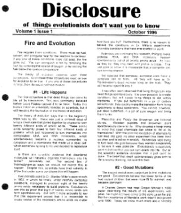
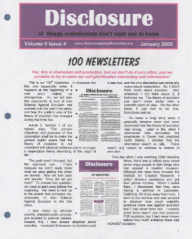

| Feature Article - January 2005 |
| by Do-While Jones |
Yes, this is shameless self-promotion, but we don't do it very often, and we promise to try to make our self-glorification interesting and informative!
This is our 100th newsletter. A milestone like this one (especially when it happens at the beginning of a new year) makes us introspective. So, we will take this opportunity to look at how Science Against Evolution has evolved over the past nine years, how Disclosure has evolved from Volume 1 Issue 1 to Volume 9 Issue 4, and how the public's view of the theory of evolution has changed during that time.
Article 2, Section 1 of our bylaws says, "The primary objectives and purposes of this corporation shall be to make the general public aware that the theory of evolution is not consistent with physical evidence and is no longer a respectable theory describing the origin of life." The objective hasn't changed, but the approach has. That's because we didn't really know what we were getting into when we started. Now we look back and wonder, "How did we get here?" To answer that question, we need to start even before the beginning. We need to look up to the events that prompted me, personally, to start Science Against Evolution in the first place.
I was raised by atheistic parents, attended public schools, and excelled in science classes. Despite this, I was always a little bit skeptical about the theory of evolution. I accepted it because my teachers said it was true, and the only alternative was some silly supernatural explanation. So, I didn't think much about evolution. Still, whenever I did think about it, it bothered me. The theory of evolution just didn't make sense from a scientific point of view. On the other hand, it just had to be true. Everybody said so.
To make a long story short, I gradually became more and more convinced that the theory of evolution was wrong. Much later in life, when I discovered how accurately the prophecies in Daniel had predicted world history, I decided that the alternative wasn't so silly. There wasn't any reason to continue to believe in evolution.
One day when I was watching CNN Headline News, there was a critical story about some crazy people in San Diego who had opened a creation museum. Although the news story mocked the Institute for Creation Research, I called directory assistance and got their phone number. When I called them, I discovered that they were having a seminar in Lancaster, California, 90 miles away from here. I went to the seminar and was amazed to discover how much scientific evidence there was against evolution that I had never been told. I already knew there wasn't any real evidence FOR evolution, but I had never known before how much scientific evidence there was AGAINST evolution.
The original goal behind Science Against Evolution was to assemble a group of people who would sponsor an ICR seminar in Ridgecrest, at which the evidence against evolution could be presented. The method for achieving that goal was to send out 200 newsletters (with membership applications) each month to 200 names selected from the Ridgecrest phone book. We started the direct mail campaign in September, 1996, in conjunction with the Desert Empire Fair, where we had an information booth. In February, 1997, we started holding monthly meetings to show the "Fourth Friday Free Films" (which are now the Fourth Tuesday Videos). We advertised the monthly meetings in the newsletter, and also placed ads in the local newspaper and Swap Sheet. By September, 1999, we had sent a newsletter to every mailbox in Ridgecrest, and had a small group coming to the monthly meetings. But the group wasn't big enough, or strong enough, to sponsor a speaker from ICR, or any other national organization.
Meanwhile, by May of 1998, we had created a web site, and started posting the newsletters on the web. We just did it because the web was there, and easy to take advantage of. We didn't think much about it. It wasn't part of our strategy. We just did it. On February 23, 1999, after nine months, we had our 1000th web visitor. But web traffic kept increasing. By the time you read this, we will have had more than 75,000 hits on our home page. That's not much traffic compared to Amazon.com or a porn site, but it is 75,000 hits!
After we set up the web site, we started getting email from all over the world, and membership applications from other parts of the United States, Canada, and Europe. We now have more members outside of Ridgecrest than in Ridgecrest. The total number of visits to our home page is roughly four times the population of Ridgecrest. We now average almost 500 visitors every week. There aren't many churches in Ridgecrest whose attendance is anywhere near 500 people per week. Consequently, our vision has become more global than local.
At that first Desert Empire Fair, in 1996, we sold some ICR books. We quickly gave that up because it was a hassle, and added no value. Why should someone buy books from us when they could buy them from ICR directly? Why should we waste our time messing with seller's permits and sales tax exemption forms? We never sold anything after that.
The content and appearance of the newsletters changed. The first few newsletters just parroted literature from ICR and Answers in Genesis. That was a waste of time. Why repeat what has already been published to a much larger audience? So, we soon began doing our own research, mining the secular journals Science and Nature for stories about evolution. We were amazed at how much grist there is for our mill in these journals. Our file of articles to comment upon continues to grow faster than we can write about them.
The editorial lead time for a 6-page newsletter is much shorter than it is for a glossy magazine, so we were able to comment on the big news items (from the "Martian meteorite" which supposedly had signs of life, up to the National Geographic tribute to Darwin last November) before the big creationist organizations did.
We try to keep the newsletter down to six pages, partly to control costs, but mostly to make it small enough for people to read the whole thing. I personally skip over lots of articles in big magazines just because I don't have time to read them all, and I assume that other people do the same thing. Unfortunately, there is usually more to say than can be said in six pages, which is why the newsletter is often eight pages, and sometimes as many as 10 or 12.
|
 |
Our first newsletters were printed using a black-and-white dot-matrix printer, and copied for 10 cents per page by a local stationery store. Not only that, the store punched and stapled the newsletters for free. I just dropped the master off one evening, and picked up all the copies the next day. It was easy. Then a big office supply superstore moved into town and put the local stationery store out of business. The big chain store wouldn't print the newsletters as cheaply, and charged extra for punching and stapling. |
|
At the same time, a small private school wanted to take advantage of Tektronix's special deal on a color printer. The printer was free, if the school would print a certain number of copies each month, and buy the ink from Tektronix. It is a small school, and cannot print the required number of copies. So, they agreed to print our color newsletters for 8 cents per page, just to reach the minimum number of copies per month they needed. Now I have to punch and staple the newsletters myself, but it is worth it to be able to include color pictures. The early versions of Microsoft Word didn't save documents as web pages very well. So, I learned the HyperText Markup Language (HTML) and created the web pages by hand. Web tools have gotten a lot better in the last few years, but after converting 100 newsletters by hand, it has gotten pretty easy for me. I still do the web pages by hand. |
 |
In the first few years, we lost money. Now we just barely break even. We pay no salaries and own no property, so expenses are very low. Our expenses are primarily postage and printing costs. It costs a little less than $15 a year to print and mail newsletters to U.S. addresses, and a little more than $15 a year to mail them outside the U.S. Many members, when sent their annual $15 renewal notice, send us $20 to $30 instead. We really appreciate that.
Contributions are more important from a motivational standpoint than from a financial one. If someone says to you, "I really like that painting," you might wonder if they like it, or are just being polite. But, if someone says, "I really like that painting; would you sell it to me for $10,000?" you can be sure they really liked the painting.
Sometimes people tell me (in person or in an email) how wonderful Science Against Evolution is, but they don't pay the membership dues. I can't help but wonder how sincere they are. Fifteen dollars a year is not much more than a buck a month. If they really thought Science Against Evolution was doing good work, couldn't they find a buck a month to send us?
If we pressured people, we could get a lot more people to pay the membership dues, but that would be pointless. Forced praise is no praise at all. That's why, if your membership has expired, we haven't sent you a series of "reminders" to subscribe again. You get a yellow renewal form with your 11th newsletter, and a red renewal form with your 12th newsletter if you didn't return the yellow one, but that's all. If you didn't renew after two reminders, we know you are no longer interested. We won't bother you any more.
It has taken a lot of my time to put out a monthly newsletter, every month for 100 months; but I gladly continue to do it because I think people appreciate it. As long as contributions keep coming in, we will think that people still value our work. When contributions stop coming in, we'll know I should be devoting my time to other things, and we will dissolve the corporation in accordance with the laws of California.
There will come a time when Science Against Evolution will have served its purpose. As far as Ridgecrest is concerned, that time seems near. There are so many engineers and scientists working for the weapons laboratory here, it is hard to find an evolutionist in Ridgecrest. Judging from the responses we get at the Community Dinner, and (lack of) letters to the editor, the theory of evolution is almost completely extinct here. If our vision were limited to Ridgecrest, we would have declared victory and returned home from the war.
But the theory of evolution still thrives in the ivory towers of academia, where reality seldom disturbs theory. The theory of evolution also thrives in the public media, not because it has scientific merit, but because it has anti-Christian potential. So, Science Against Evolution still has some reason to exist on a national scale.
Will there be a 200th newsletter? We hope not. We hope the theory of evolution won't survive another eight years and four months. I'd like to take some time off and have fun. But, there still seems to be a need and an appreciation for what we do, so for the next year or two at least, we will continue to remind people that science is against evolution.
| Quick links to | |||
|---|---|---|---|
| Science Against Evolution Home Page |
Back issues of Disclosure (our newsletter) |
Web Site of the Month |
Topical Index |